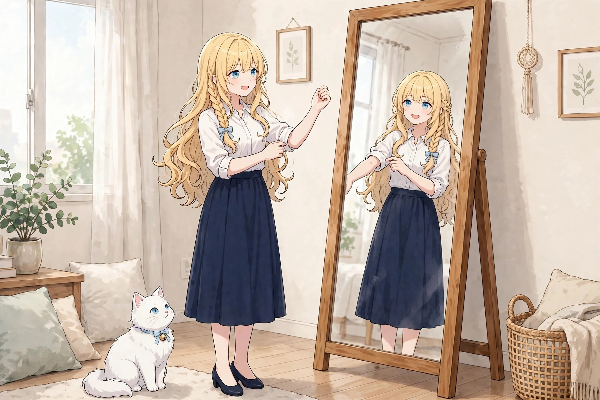

二の腕カバー トップスの選び方（40代）

セラフィナ：先に結論です。二の腕は「袖丈が肘近くまであること」「袖口にゆとりがあること」「身頃はラインを拾いすぎない生地」の3点でカバーしやすくなります。この記事の商品は、この3点に合うものだけを先に並べます。
この記事の商品（先に比較）
| 商品 | 価格（税込） | お店 |
|---|---|---|
| ブラウス レディース 7分袖 ストレッチ 静電防止 | 4,900円 | TAKA-Q（m.f.editorial） |
| テクスチャーデザイン刺繍ブラウス レディース トップス | 4,491円 | Doux Belle |
| [antiqua] メロウデザイン カットソー | 2,990円 | antiqua |
目安1：袖丈は肘近くまで
二の腕で一番太く見えるのは肩から15cm前後の位置です。袖がその位置で終わると視線が集まります。七分袖（肘近くまで）なら、その位置をすっぽり覆えます。
目安2：袖口は腕に沿わせすぎない
袖口がぴったりだと、かえって太さが目立ちます。袖口に少しゆとりがあり、腕との間に隙間が見える形が細く見えます。
目安3：身頃は落ち感のある生地
薄くて体に張り付く生地は、二の腕だけでなく背中のラインも拾います。中くらいの厚みで、すとんと落ちる生地を選んでください。
あえて推さないもの
- 袖が肩のすぐ下で終わる半袖（太く見える位置で切れます）
- ぴったりしたリブ編みの袖（太さを拾います）
- ノースリーブに薄い羽織りだけ（羽織りがめくれると結局見えます）
この記事の目安に合う商品
特徴：七分袖のブラウスと、袖にゆとりのあるカットソーに絞りました。
PR：この記事のテーマに合うトップス（PR）


![[antiqua] メロウデザイン カットソー](https://tshop.r10s.jp/stylife/cabinet/item/957/sr5957-01_1.jpg?fitin=600%3A720&composite-to=center%2Ccenter%7C600%3A720)
あわせて読みたい：トップス種類別ガイド／姿勢のトレーニング